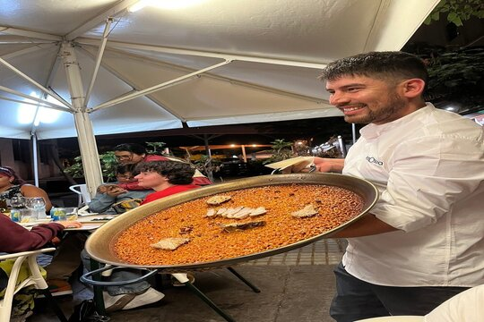

"Un Refugio Gastronómico en Santa Cruz de Tenerife"
Situado en el corazón de la vibrante ciudad de Santa Cruz de Tenerife, el Restaurante "Arrosura" abrió sus puertas en el año 2010, marcando el inicio de una travesía culinaria que combina tradición y sabor. Fundado por un apasionado chef con raíces colombianas, "Arrosura" se ha convertido rápidamente en un referente de la gastronomía local, destacándose por su especialización en arroces de diversas tradiciones culinarias.
Desde sus inicios, el restaurante ha establecido dos objetivos fundamentales: ofrecer platos de alta calidad y celebrar la diversidad cultural a través del arroz. Su menú es un recorrido por variadas recetas clásicas de diferentes partes del mundo; desde la emblemática paella valenciana, pasando por el cremoso risotto italiano, hasta el exótico biryani indio. Cada platillo es elaborado con ingredientes frescos y técnicas auténticas, lo que no solo asegura un sabor excepcional, sino que también invita a los comensales a explorar un abanico de sabores y tradiciones culinarias.
A lo largo de los años, "Arrosura" ha cultivado una sólida reputación que trasciende su oferta gastronómica. La atención al cliente es uno de sus pilares; el personal, altamente capacitado, se esfuerza por brindar una experiencia memorable a cada visitante, asegurando que cada comida sea única y especial. Esta dedicación al servicio al cliente ha generado un ambiente acogedor, donde cada comensal se siente valorado y bienvenido.
Además de su compromiso con la gastronomía de calidad, "Arrosura" juega un papel activo en la comunidad. Participa en numerosos eventos locales, promoviendo la cultura del arroz y la sostenibilidad. Este enfoque no solo refuerza su conexión con la comunidad, sino que también resalta la importancia del ingrediente central de su cocina: el arroz, un alimento que une a diferentes culturas y tradiciones.En conclusión, el Restaurante "Arrosura" no es solo un lugar donde disfrutar de platillos exquisitos, sino también un espacio que celebra la riqueza gastronómica global y une a personas de diferentes orígenes. Su dedicación a la calidad y la diversidad lo convierte en un destino imperdible para aquellos que buscan una experiencia culinaria inolvidable en Santa Cruz de Tenerife.